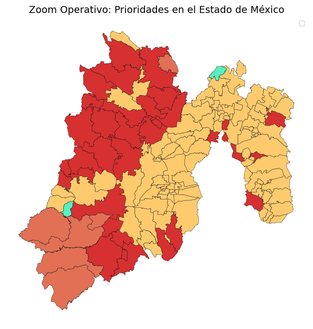
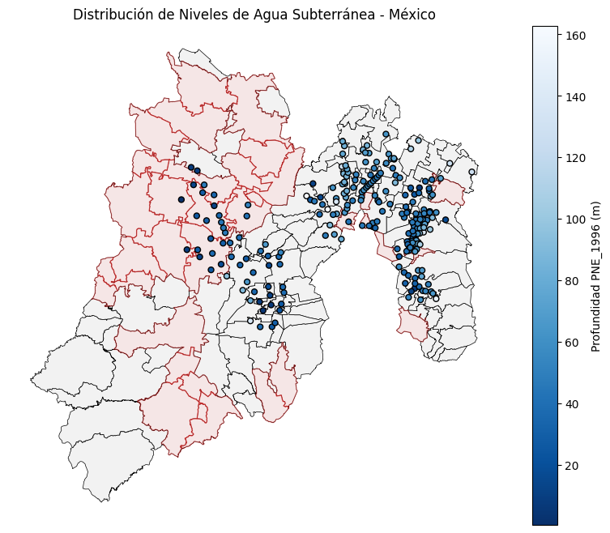
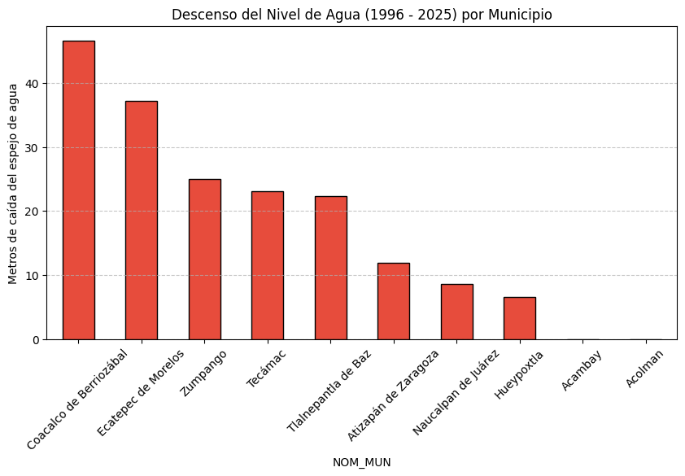

import pandas as pdimport geopandas as gpdimport osimport matplotlib.pyplot as plt# 1. Configuracion de rutasBASE_DIR = os.path.abspath(os.getcwd())PROCESSED_DIR = os.path.join(BASE_DIR, "..", "data", "processed")# 2. Carga del GeoJSON analizado en el Notebook 02ruta_final = os.path.join(PROCESSED_DIR, "vulnerabilidad_final_analizada.geojson")gdf_analisis = gpd.read_file(ruta_final)print(f"Base de datos cargada: {len(gdf_analisis)} municipios listos para analisis focalizado.")
Base de datos cargada: 2456 municipios listos para analisis focalizado.
# 1. Filtrar por Estado (Estado de México en este ejemplo)# Puedes cambiar 'México' por 'Puebla' o cualquier otro NOM_EDO de tu Top 15estado_objetivo ='México'gdf_focalizado = gdf_analisis[gdf_analisis['NOM_EDO'] == estado_objetivo].copy()# 2. Visualizacion del area de intervencionfig, ax = plt.subplots(figsize=(10, 8))# Dibujar municipios del estado segun su categoria de prioridadcolores = {'1. CRITICO': '#d63031', '2. SOCIAL': '#e17055', '3. HIDRICO': '#fdcb6e', '4. ESTABLE': '#55efc4'}for cat, color in colores.items(): subset = gdf_focalizado[gdf_focalizado['categoria_prioridad'].str.contains(cat)]ifnot subset.empty: subset.plot(ax=ax, color=color, edgecolor='black', linewidth=0.3, label=cat)plt.title(f"Zoom Operativo: Prioridades en el Estado de {estado_objetivo}", fontsize=14)plt.legend(loc='upper right')plt.axis('off')plt.show()# 3. Cuantificacion localpob_critica_local = gdf_focalizado[gdf_focalizado['categoria_prioridad'].str.contains('1. CRITICO')]['Poblacion total'].sum()print(f"Poblacion en estado CRITICO en {estado_objetivo}: {pob_critica_local:,.0f} habitantes.")
C:\Users\Jafet\AppData\Local\Temp\ipykernel_6212\1286553748.py:18: UserWarning: Legend does not support handles for PatchCollection instances.
See: https://matplotlib.org/stable/tutorials/intermediate/legend_guide.html#implementing-a-custom-legend-handler
plt.legend(loc='upper right')
C:\Users\Jafet\AppData\Local\Temp\ipykernel_6212\1286553748.py:18: UserWarning: No artists with labels found to put in legend. Note that artists whose label start with an underscore are ignored when legend() is called with no argument.
plt.legend(loc='upper right')

Poblacion en estado CRITICO en México: 3,816,298 habitantes.
# 1. Analisis de indicadores clave para los municipios criticos del estadodf_resumen_local = gdf_focalizado[gdf_focalizado['categoria_prioridad'].str.contains('1. CRITICO')].copy()# 2. Calculo de deficit per capita promedio en la zona critica# El deficit esta en m3/año, lo pasamos a litros/persona/dia (lpd)df_resumen_local['lpd_deficit'] = (abs(df_resumen_local['DMA_NEGATI']) *1000) / (df_resumen_local['Poblacion total'] *365)print(f"--- DIAGNOSTICO TECNICO: {estado_objetivo} (ZONAS CRITICAS) ---")display(df_resumen_local[['NOM_MUN', 'Poblacion total', 'DMA_NEGATI', 'lpd_deficit']].sort_values(by='Poblacion total', ascending=False).head(10))
import pandas as pdimport os# 1. Función para localizar el archivodef buscar_archivo_cobertura(directorio, patron):for archivo in os.listdir(directorio):if patron in archivo:return os.path.join(directorio, archivo)returnNoneRAW_DIR = os.path.join(BASE_DIR, "..", "data", "raw")nombre_parcial ="Cobertura de la población con servicio de agua entubada"ruta_final_cobertura = buscar_archivo_cobertura(RAW_DIR, nombre_parcial)if ruta_final_cobertura:# 2. Carga del archivo saltando la fila del titulo (fila 0)# Segun tu diagnostico, los años estan en la siguiente fila df_cobertura = pd.read_excel(ruta_final_cobertura, skiprows=1)# 3. Renombrado manual basado en tu matriz de diagnostico# Col 0: Entidad, Col 7: 2020 nuevas_columnas = ['Entidad federativa', '1990', '1995', '2000', '2005', '2010', '2015', '2020' ] df_cobertura.columns = nuevas_columnas# 4. Limpieza: eliminamos filas que no tengan datos (como la fila original de 'Entidad federativa') df_cobertura = df_cobertura[df_cobertura['Entidad federativa'] !='Entidad federativa'].dropna(subset=['Entidad federativa'])# 5. Extraccion de dato estatal para Mexico 2020 filtro_edo = df_cobertura['Entidad federativa'].str.contains('México', na=False)# Validamos que existan datos antes de extraerif filtro_edo.any(): cobertura_edomex = df_cobertura[filtro_edo]['2020'].values[0]# 6. Dimensionamiento para Nezahualcoyotl municipio_foco ="Nezahualcóyotl"# Aseguramos que df_resumen_local existe (del analisis anterior) datos_foco = df_resumen_local[df_resumen_local['NOM_MUN'] == municipio_foco].iloc[0] deficit_anual_m3 =abs(datos_foco['DMA_NEGATI'])# 7. Calculo de Caudal Requerido (lps) caudal_lps = (deficit_anual_m3 *1000) / (365*24*3600)print(f"--- RESULTADOS TECNICOS: {municipio_foco} ---")print(f"Porcentaje de cobertura (2020): {cobertura_edomex}%")print(f"Caudal de diseño necesario: {caudal_lps:,.2f} lps")else:print("ERROR: No se encontro el dato del Estado de México en la tabla.")else:print("ERROR: No se encontro el archivo de cobertura.")
--- RESULTADOS TECNICOS: Nezahualcóyotl ---
Porcentaje de cobertura (2020): 98.65%
Caudal de diseño necesario: 0.02 lps
# 1. Carga de la capa de red piezométricaruta_piezo = os.path.join(BASE_DIR, "..", "data", "geofiles", "red_piezometrica_2025.shp")gdf_piezo = gpd.read_file(ruta_piezo)# --- PASO DE DIAGNÓSTICO: Ver nombres reales de columnas ---print("Columnas detectadas en el archivo de pozos:")print(gdf_piezo.columns.tolist())# 2. Alineación de sistemas de coordenadas (CRS)gdf_piezo = gdf_piezo.to_crs(gdf_focalizado.crs)# 3. Intersección espacialpiezo_interseccion = gpd.sjoin(gdf_piezo, gdf_focalizado, how="inner", predicate="within")# 4. Auto-identificación de la columna de profundidad# Buscamos columnas que contengan 'PROF' o 'NIVEL' (comunes en archivos de CONAGUA)posibles_cols = [c for c in piezo_interseccion.columns if'PROF'in c.upper() or'NIVEL'in c.upper() or'NE'in c.upper()]if posibles_cols: col_profundidad = posibles_cols[0]print(f"\nUsando la columna '{col_profundidad}' para el análisis de profundidad.")# 5. Resumen de profundidad por municipio resumen_piezo = piezo_interseccion.groupby('NOM_MUN').agg({ col_profundidad: ['mean', 'min', 'max'] }).round(2)print("\n--- NIVELES DE AGUA (PIEZOMETRÍA) EN METROS ---") display(resumen_piezo)# 6. Visualización fig, ax = plt.subplots(figsize=(10, 8)) gdf_focalizado.plot(ax=ax, color='#f2f2f2', edgecolor='black', linewidth=0.5) df_resumen_local.plot(ax=ax, color='#ffcccc', edgecolor='red', alpha=0.3) piezo_interseccion.plot(ax=ax, column=col_profundidad, cmap='Blues_r', legend=True, legend_kwds={'label': f"Profundidad {col_profundidad} (m)"}, markersize=25, edgecolor='black') plt.title(f"Distribución de Niveles de Agua Subterránea - {estado_objetivo}") plt.axis('off') plt.show()else:print("\nERROR: No se encontró una columna de profundidad clara.")print("Por favor, revisa la lista de columnas arriba y dime cuál representa la profundidad.")
Columnas detectadas en el archivo de pozos:
['NUM_POZO', 'NOM_POZO', 'CVE_ACUI', 'NOM_ACUIF', 'CVE_EDO', 'NOM_EDO', 'ELEV_BROC', 'LATITUD', 'LONGITUD', 'PNE_1996', 'PNE_1997', 'PNE_1998', 'PNE_1999', 'PNE_2000', 'PNE_2001', 'PNE_2002', 'PNE_2003', 'PNE_2004', 'PNE_2005', 'PNE_2006', 'PNE_2007', 'PNE_2008', 'PNE_2009', 'PNE_2010', 'PNE_2011', 'PNE_2012', 'PNE_2013', 'PNE_2014', 'PNE_2015', 'PNE_2016', 'PNE_2017', 'PNE_2018', 'PNE_2019', 'PNE_2020', 'PNE_2021', 'PNE_2022', 'PNE_2023', 'PNE_2024', 'PNE_2025', 'geometry']
Usando la columna 'PNE_1996' para el análisis de profundidad.
--- NIVELES DE AGUA (PIEZOMETRÍA) EN METROS ---
PNE_1996
mean
min
max
NOM_MUN
Acambay
NaN
NaN
NaN
Acolman
35.85
24.92
46.74
Aculco
NaN
NaN
NaN
Almoloya de Juárez
26.96
11.06
42.66
Amanalco
NaN
NaN
NaN
...
...
...
...
Villa de Allende
NaN
NaN
NaN
Xonacatlán
41.90
31.59
52.21
Zinacantepec
95.82
95.82
95.82
Zumpahuacán
NaN
NaN
NaN
Zumpango
66.80
47.74
87.19
88 rows × 3 columns

# 1. Definir columnas de interéscol_inicio ='PNE_1996'col_actual ='PNE_2025'# 2. Calcular la diferencia (Abatimiento)# Si el valor es positivo, el agua ha bajado (mayor profundidad)piezo_interseccion['abatimiento_m'] = piezo_interseccion[col_actual] - piezo_interseccion[col_inicio]# 3. Resumen por municipio críticoresumen_evolucion = piezo_interseccion.groupby('NOM_MUN').agg({ col_inicio: 'mean', col_actual: 'mean','abatimiento_m': 'mean'}).rename(columns={ col_inicio: 'Nivel_1996_m', col_actual: 'Nivel_2025_m','abatimiento_m': 'Descenso_Total_m'}).round(2)print("--- EVOLUCION DEL NIVEL FREATICO (ABATIMIENTO) ---")display(resumen_evolucion.sort_values(by='Descenso_Total_m', ascending=False).head(10))# 4. Grafica de barras de descenso para los 10 mas afectadosresumen_evolucion.sort_values(by='Descenso_Total_m', ascending=False).head(10)['Descenso_Total_m'].plot( kind='bar', color='#e74c3c', figsize=(10,5), edgecolor='black')plt.title("Descenso del Nivel de Agua (1996 - 2025) por Municipio")plt.ylabel("Metros de caída del espejo de agua")plt.xticks(rotation=45)plt.grid(axis='y', linestyle='--', alpha=0.7)plt.show()
--- EVOLUCION DEL NIVEL FREATICO (ABATIMIENTO) ---
Nivel_1996_m
Nivel_2025_m
Descenso_Total_m
NOM_MUN
Coacalco de Berriozábal
57.30
103.90
46.60
Ecatepec de Morelos
44.59
80.29
37.19
Zumpango
66.80
82.53
24.99
Tecámac
63.44
81.50
23.07
Tlalnepantla de Baz
48.66
77.20
22.39
Atizapán de Zaragoza
80.79
69.22
11.95
Naucalpan de Juárez
71.41
90.64
8.62
Hueypoxtla
62.84
81.58
6.59
Acambay
NaN
NaN
NaN
Acolman
35.85
NaN
NaN

# 1. Consolidacion de variables clave# Unimos el resumen de poblacion/deficit con el de piezometriaficha_intervencion = df_resumen_local.set_index('NOM_MUN').join(resumen_evolucion, how='inner')# 2. Seleccion de columnas estrategicas para el reportecolumnas_reporte = ['Poblacion total', 'DMA_NEGATI', 'lpd_deficit', 'Nivel_2025_m', 'Descenso_Total_m']reporte_final = ficha_intervencion[columnas_reporte].sort_values(by='Descenso_Total_m', ascending=False)# 3. Presentacion de la Ficha Tecnicaprint("--- FICHA DE PRIORIZACION DE OBRA HIDRAULICA (ODS 6) ---")print("Enfoque: Estado de México - Zonas de Abatimiento Crítico\n")display(reporte_final.head(5))# 4. Exportacion Final del Notebook 03ruta_proyecto = os.path.join(PROCESSED_DIR, "propuesta_tecnica_edomex_final.csv")reporte_final.to_csv(ruta_proyecto, encoding='utf-8-sig')print(f"\nNotebook 03 finalizado. Proyecto guardado en: {ruta_proyecto}")
--- FICHA DE PRIORIZACION DE OBRA HIDRAULICA (ODS 6) ---
Enfoque: Estado de México - Zonas de Abatimiento Crítico